Engineering Drawing Portfolio — AutoCAD 2026
Independent drafting portfolio covering two mechanical drawings and one residential floor plan. The work includes orthographic and sectional views, assembly drawings, dimensioning, hatching, layers, blocks, and drawing-sheet preparation.
- IC engine crankshaft — four-throw crankshaft detail with sections A-A and B-B, flywheel bolt circle, centerlines, and linear, diametral, radial, and angular dimensions.
- Screw jack — seven component drawings with material specifications and a half-sectional view of the complete assembly.
- Residential floor plan — two-bedroom single-storey layout with wall hatching, door swings, furniture and fixture blocks, parking, landscaping, and dimensions on all sides.
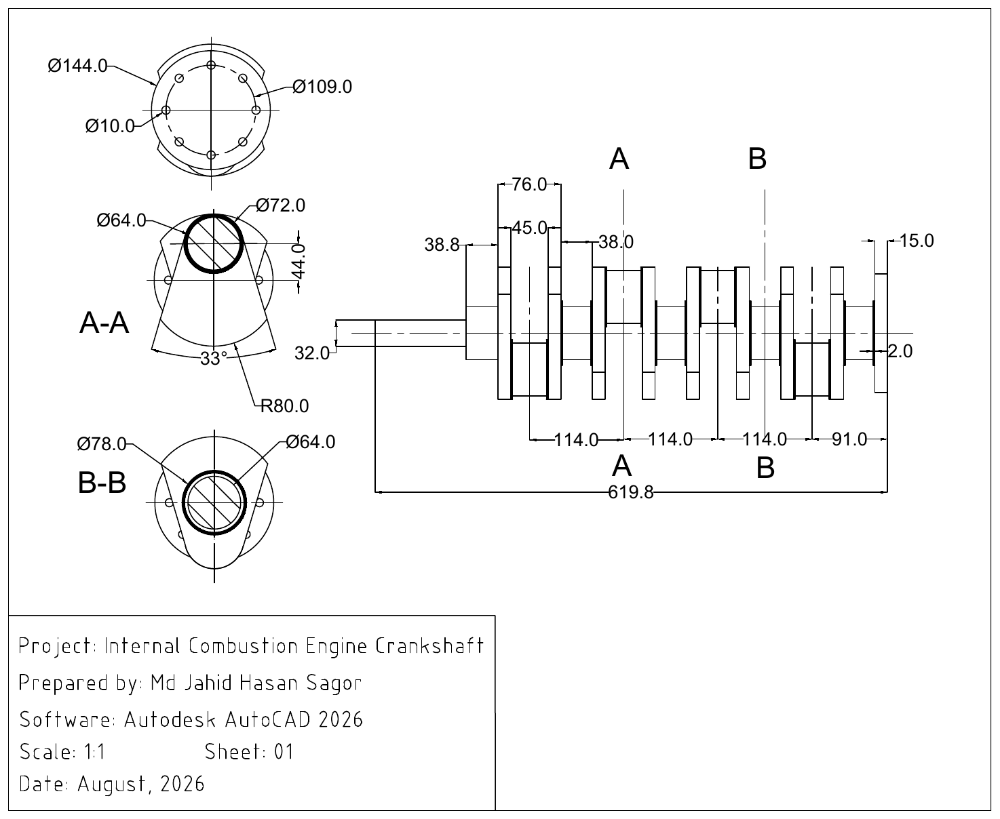
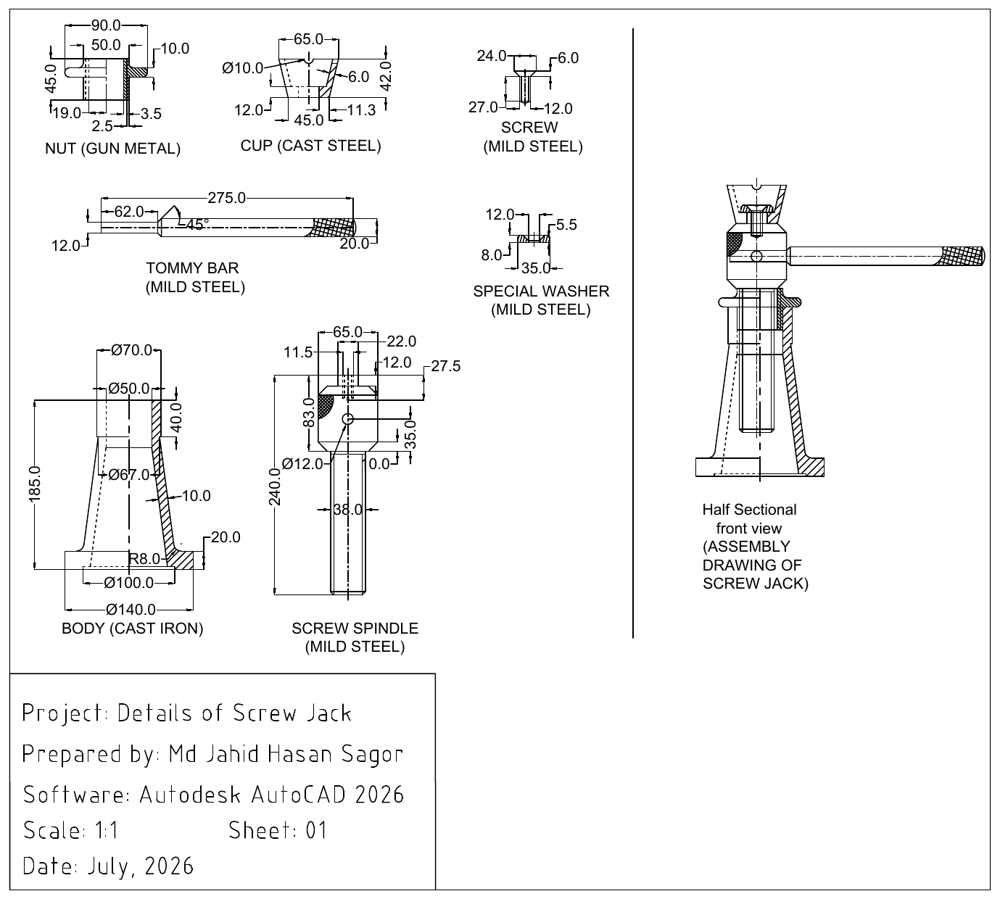
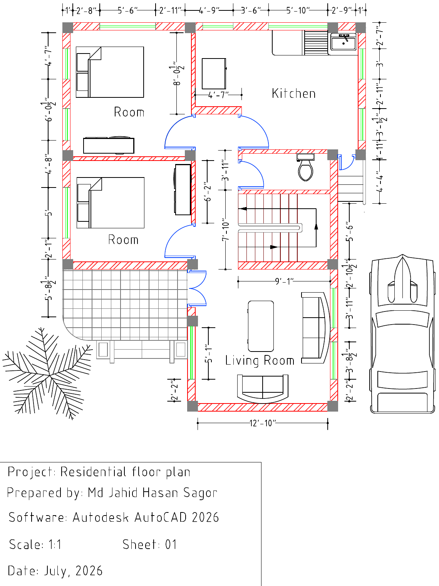
Skills: AutoCAD, 2D drafting, orthographic and sectional views, assembly drawings, dimensioning, hatching, layers, blocks
Automatic Juice Making Machine
Designed and fabricated a lime-juice machine based on a rotating squeezing mechanism. I modeled the rotating parts in SolidWorks, prepared the geometry for manufacturing, and produced the parts by molding and aluminum casting in the BUET foundry lab. The cast parts were then assembled into the machine and tested as a working prototype.

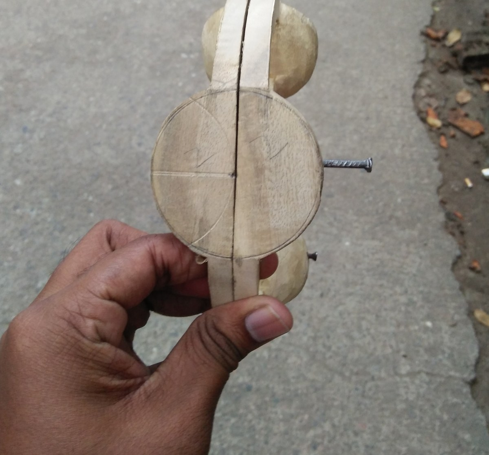
Skills: SolidWorks, mechanical design, sand molding, aluminum casting, fabrication, prototyping
Single-Zone Cooling Load Calculation — CLTD/CLF Method
Problem: estimate the peak cooling load and required air-conditioning capacity for a 100 m² single-zone space at the 5 PM design condition.
What I did: carried out a component-by-component CLTD/CLF calculation. I calculated roof and wall U-values from construction resistances, corrected the tabulated CLTD values for the design date and outdoor conditions, and included conductive and solar gains through the glazing. The calculation also includes sensible and latent outdoor-air loads at 1 ACH and internal gains from lighting, occupants, and equipment.
Result: the peak load was 13.25 kW (3.77 TR). With the 10% design allowance used in the project, the required capacity was about 4.1 TR, so a nominal 4.5 TR unit was selected. The west-facing glass contributed about 2.43 kW of solar load, and lighting was the largest single load in the final breakdown.
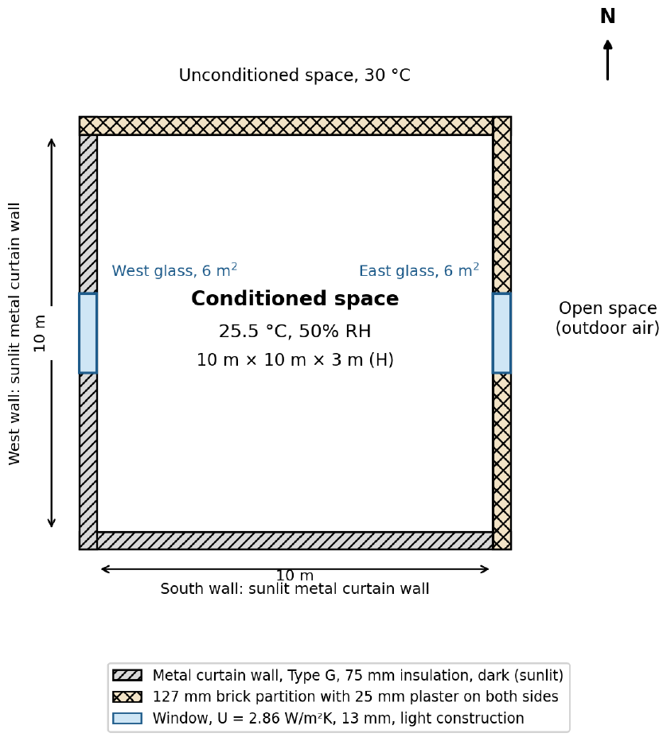
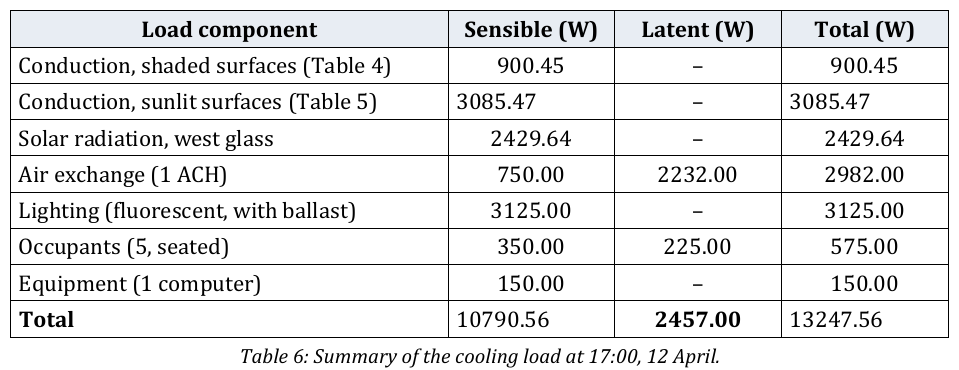
Skills: cooling-load calculation, CLTD/CLF method, ASHRAE tables, U-value calculation, psychrometrics, equipment sizing
Chilled-Water Automation and Process Control
A process chilled-water line was being controlled manually, which required frequent operator attention and allowed the process temperature to fluctuate. I built a simple automatic control using an Autonics TC4W temperature controller, relay, and solenoid valve so that chilled-water flow responded directly to the temperature setpoint.
I also worked on a stepper-motor-driven peristaltic filling pump whose driver did not have a suitable pulse input available. I built an LM555 astable multivibrator circuit to generate an approximately 3 kHz pulse signal for the stepper-motor driver.
The chilled-water control replaced routine manual valve operation, and the custom pulse circuit provided the control signal needed to run the filling pump.
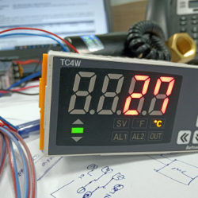
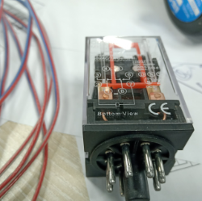
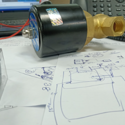
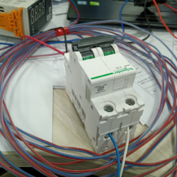
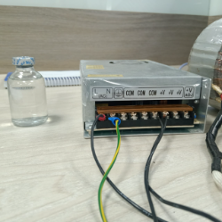
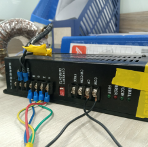
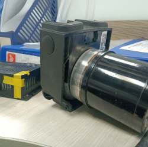
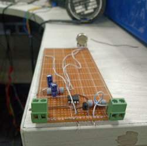
Skills: temperature control, process automation, instrumentation, relay logic, solenoid valves, stepper-motor control, basic circuit design
Digital Psychrometric Calculator in MATLAB
Built a MATLAB program and graphical interface that calculates psychrometric properties from dry-bulb and wet-bulb temperature. The program returns relative humidity, humidity ratio, dew-point temperature, specific volume, and enthalpy.
Saturation-pressure data were taken from thermodynamic property tables and interpolated for use between tabulated temperatures. The project combined the psychrometric equations, data lookup and interpolation, and a simple GUI so the calculations could be repeated without reading each property manually from a printed chart.
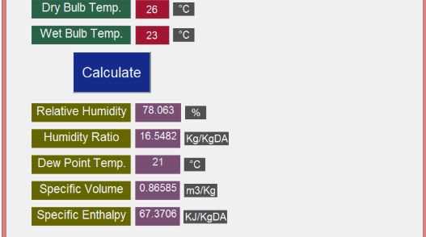
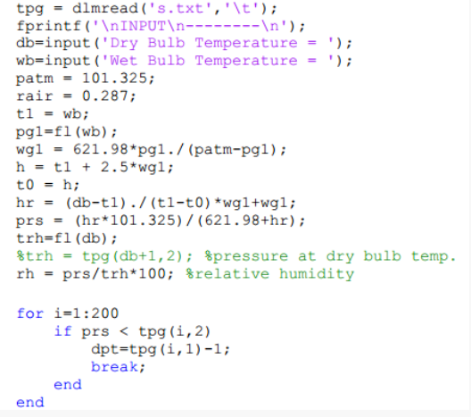
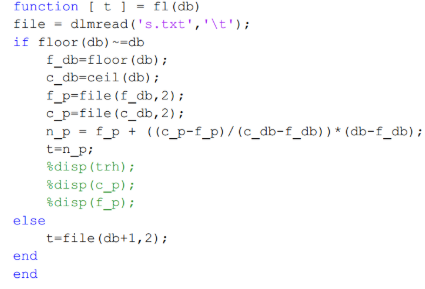
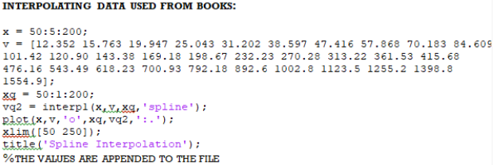
Skills: MATLAB, psychrometrics, thermodynamics, numerical interpolation, GUI development
Selected Machine Learning Projects
Small projects used to practice data preparation, model development, visualization, and prediction across several types of machine-learning problems.
- Mall customer segmentation — K-means clustering using annual income and spending score.
- Stock price forecasting — time-series forecasting with Prophet, including forecast intervals.
- Brain tumor classification — MRI image classification using a Vision Transformer.
- Fake news classification — text classification of news articles.
- House price prediction — regression on housing data.
- Used car price prediction — regression using vehicle listing data.
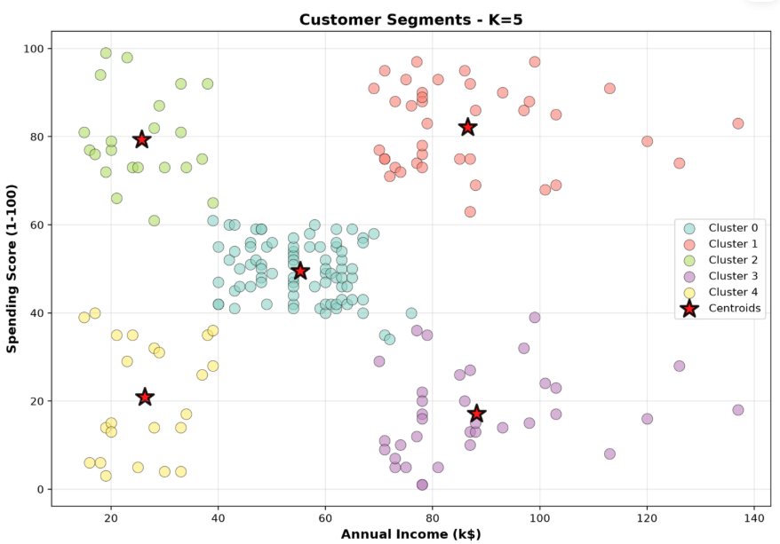
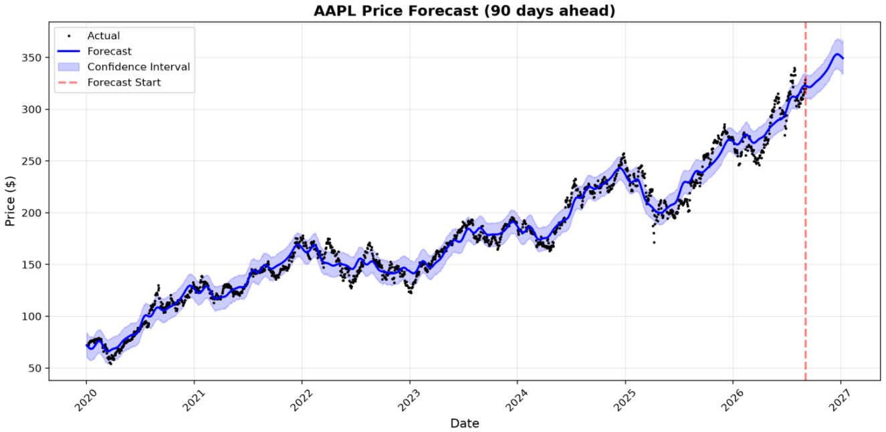
Skills: Python, scikit-learn, PyTorch, clustering, regression, classification, time-series forecasting, data analysis